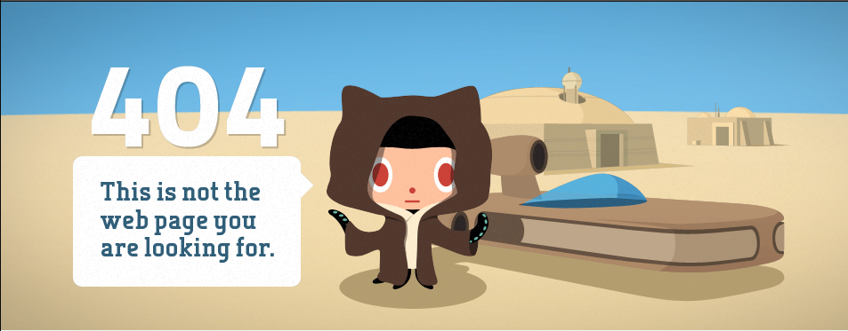

Histoire / Thème 1 / Chapitre 2 : Démocraties fragilisées et expériences totalitaires dans l'Europe de l'entre-deux-guerres
→ Comment les régimes totalitaires menacent-ils les démocraties dans l'Europe de l'entre-deux guerres ?

I. La montée des régimes totalitaires
A. En Russie: un régime né de la Révolution et de la guerre
À la mort de Lénine le 21 janvier 1924, qui dirigeait la Russie depuis 1917, Trotski et Staline s'opposent pour sa succession. Staline finit par écarter Trotski et s'imposer en 1929 comme le seul maître de l'URSS (Union des Républiques Socialistes Soviétiques créée en 1922).
1. La mise en place d'une économie contrôlée par l'Êtat.


| Titre | La Ligne générale |
|---|---|
| Réalisateur et scénariste | Sergueï Eisenstein |
| Date de sortie | 1929 |
| Naturee | Film |
1. | Les koulaks (paysans riches) | Les paysans pauvres | |----------------------------------------------------------------------------------------------------------------------------------------------------|----------------------------------------------------------------------------| | Maison décourée, en surpoid, ne travaille pas, allongée, la femme à des bijoux, ils ont beaucoup d'animaux en bonne santé, abondance de la boisson | Mal habillés, salles, maigres, pieds nus, maison délabrée, matériaux vieux |
- Demander un cheval / taureau pour labourer
-
Non
-
Ils labourent un champ
- De ch
Staline mène une politique de terreur et de répression pour imposer son pouvoir et contrôler le parti communiste, parti unique. Cette politique est particulièrement intense entre 1937 et 1938 lors de la grande Terreur qui vise notameent, lors de procès truqués, de hauts responsables du parti, de l'armée, de l'Etat. Ainsi Staline envoie des milliers de personnes dans les camps du goulag.
Camps du Goulag: camps de travail forcé où Staline fait enfermer ceux qui s'opposent à lui ou lui déplaisent
B. En Allemagne, un régime établi dans un pays en crise.

En 1919, l'Allemagne est déclarée responsable de la 1ère Guerre Mondiale. Le Traité de Versailles lui impose des conditions très dures et que le parti nazi dénonce (un Diktat pour les Allemands). Celui-ci arrive au pouvoir dans un contexte de crise économique (= Grande Dépression depuis 1929). Hitler deient chancelier en Janvier 1933. Il porte le titre de führer et impose une dictature dans laquelle il détient tous les pouvoirs. Rapidement, il fait du parti nazi un parti unique et supprime les libertés et les droits fondamentaux. Hitler sera au pouvoir jusqu'en 1945.
2. Une société encadrée.

étape 1:
Ce document est une affiche de propagande commandée par Adolf Hitler, crée dans les années 1930, destinée à la population allemande.
étape 2:
Au premier plan, on voit des centaines d'enfants regardant hitler et faisant le salut nazi, au second plan, on voit hitler.
étape 3:
Cette affiche est probablement une affiche de propagande pour hitler, pour inculquer un culte de la personnalité d'hitler, et ramener les enfants dans les jeunesses hitlériennes

- L'auteur du texte est Guillaume Ducher
- L'objectif de Guillaume Ducher est d'alerter l'opinion publique sur le nombre et la cruauté des camps de concentration
- _
| Opposants politiques au régime hitlérien | députés du reichtag, communistes |
|---|---|
| Opposants civils au régime hitlérien | éditeurs de journaux, mouvements marxistes |
| Citoyens allemands discriminés à cause de leur religion | 200 personnes (juifs) |
| Détenus de droit commun | pacifistes, avocats, artistes, médecins, ouvriers, paysans, bourgeois |
Les jeunes et les adultes sont encadrés dans des organistations contrôlées par le régime nazi. La propagande développe le culte de la personnalité autour d'Hitler. La Gestapo (police politique), fait régner la terreur. Les opposants sont envoyés dans des camps de concentration.
3. Un régime raciste et antisémite
| Une idéologie raciste et antisémite | Mise en application |
|---|---|
| Une race supérieure: la race aryenne. Une race inférieure: les Juifs |
Lois de Nuremberg 1935: Les Juifs sont privés de la citoyenneté allemande, interdiction des mariages entre Juifs et allemands, de hisser le drapeau national... 9-10 novembre 1938: Nuit de cristal Destruction et pillage en Allemagne de plus de 200 synagogues et dde plus de 7500 commerces tenus par des Juifs, arrestation de 30 000 Juifs Odronnances du 12 novembre 1938 Interdictions de certaines professions aux Juifs |
C. En france: l'example du Front Populaire


- Les partis de gauche dénoncent une tentative de coup d'État et lancent des contre-manifestations
- S.F.I.O (Section de l'Internationale Ouvrière), le parti radical, le parti communiste français (PCF).
- Le pain, la paix et la liberté
- Le front populaire gagne les élections. Léon Blum est nommé chef du gouvernement
- Les ouvriers vont manifester, organiser des grèves, occuper les usines, pour inciter le gouvernement à mettre en oeuvre son programme.
- Ce sont les accords de Matignon.
- Hausse des salaires, 15 jours de congés payés, réduction du temps de travail, mise en place des délégués du personnel, et des conventions collectives
- Le 21 juin 1938
-
Daladier forme un nouveau gouvernement avec la droite
-
Droit civils (fonder une famille, se marier), droits économiques et sociaux (travail, grève etc...).
B. Les démocraties inquiètes face aux régimes totalitaires
À partir de 1935, en violation du Traité de Versailles, Hitler réarme l'Allemagne et oriente l'économie vers la préparation de la guerre:
- rétablissement du service militaire
- remilitarisation de la Rhéanie
- production d'armes modernes (tanks, avions ...)
Hitler souhaite en effet étendre l'Allemagne par la conquête d'un "espace vital" à l'est:
- mars 1938: rattachement de l'Autriche à l'Allemagne (Anschluss)
- septembre 1938: annexion des Sudètes
- mars 1939: invasion de la Bohême-Moravie
Face à ces provocations, les démocraties veulent sauver la paix. Lors de la conférence de Munich en 1938, les démocraties occidentales accordent aux nazis les territoires qu'ils réclament.
Conclusion:
Durant l'entre 2 guerres, l'Europe voit se développer des régimes totalitaires comme le régime soviétique, nazi. Ces régimes totalitaires menacent la paix en Europe et cette montée des périls dans un contexte de crise fragilise les démocraties.
Régime totalitaire
régime d'un pays dans lequel le pouvoir appartient à un parti unique et à un dictateur, et où l'Etat contrôle toute la vie politique, économique, sociale, culturelle. La soumission totale des individus est obtenue par l'encadrement de la population la propagande et la terreur.